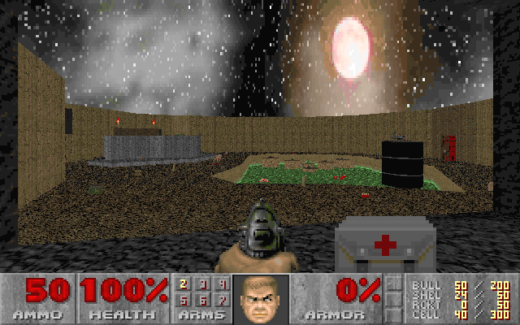
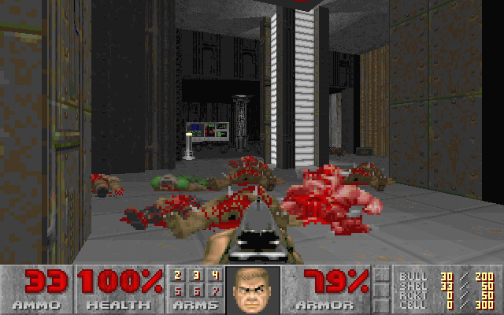
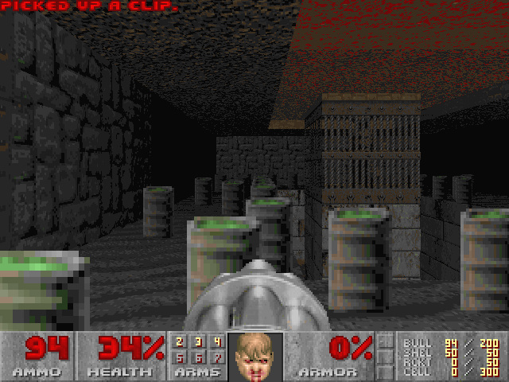

This is my 24 level Deathmatch WAD. Unfortunately, the idGames Archive maintainers got the WAD file name and the ZIP file name messed up, so I guess that's what I get for trying to update my WAD after it's been released. Anyways, not all of the maps are consistent. Some maps are way bigger and therefore require more players in order to have proper flow. Just play this WAD with as many people as you can and it'll be a blast. I guarantee it!
DOWNLOAD:
SEIDTH01.zipThis WAD is a 3 level singleplayer mappack that does support Deathmatch and Co-op. The maps made for this are somewhat inconsistent in design, but it's still pretty fun I think. The first map has monsters that teleport in "randomly", which was a pain in the ass to implement, and it can also catch the player off guard.
DOWNLOAD:
ERTHASLT.zipIf you are a big fan of people swearing at you before you murder them, then you will like this mod. The zombies will spout out a ton of funny lines taken from various songs, skits, and youtube videos. Also, as the player, you can also define a key to say your own profanity, which makes it useful for co-op or deathmatch!
DOWNLOAD:
TALKINGZOMBIES.zipSimilar to TALKING ZOMBIES, but replaces almost all sound effects in game, as well as replacing music and some graphics. It is also compatible with any port, even DOOM2.EXE!
DOWNLOAD:
BULLSHIT.zipThis mod's pretty neat because it's kinda scary. Some dudes are just filler content like the mutant and the hanging victim. I still need to replace all the weapons. Some of the enemies have unique ways of attacking. The Spectral Demon will wait to attack the player until the time is just right. If you don't kill it when it attacks, it will disappear for a while and come back later. The Watcher is even more extreme. You will know it's watching you because you will see very breif glimpses of it occasionally. It is much less likely for it to attack, but if it does, it's basically a death sentence. It is impossible to kill the Watcher. The Death Skull is a skull that charges at you when you go near it. It is invisible almost always, but sometimes you'll see it staring at you in the distance. The Face of Doom is a sinister entity that is fairly easy to dispatch, but it can be a spooky encounter when you're not expecting it, which is pretty much always. The Freak is a legless floating creep that teleports around and appears in your face dealing massive damage. The Night Creeper is a creepy bastard. It stands still to lure in unsuspecting prey and disappears when it attacks. It then reappears right next to you and will kill you if you don't jump away from it quickly. It then stands completely still until it decides to attack again.
This is a mod that enables the user to throw and shoot fireworks in addition to wielding the classic weapons. This mod is mostly a WIP because there are only seven fireworks added at the moment, but I might add more eventually.
DOWNLOAD:
Pyromania_V3.zipThis controversial mod (which got me in trouble on the Doomworld and ZDoom forum pages) is a hacking simulator. It doesn't give you the ability to crash someone's server and ruin their day. It's just a mod for you to screw around with your friends with. It lets players have aimbot, wallhacks, tons of crazy damage/defense buffs, tons of activatable powers like invulnerability, flight, jump, speed, cactus mode, etc. It also can let players use AIMX weapons which have super crazy abilities. See the .txt file in the zip to find out how to get it working.
DOWNLOAD:
AIMX_V1.zip1 level WAD. Features several distinct challenges before you can finish the level.
DOWNLOAD:
TRIAL.zipA 32 map megawad under construction. 21 maps are complete currently. This WAD will not see a public release, as it is my ultimate creation, and will be gifted to those I deem worthy. You could also just hit me up and ask for it once it's complete, that works as well.


eMail:
pete_hunt@comcast.net
Discord Tag:
Seidolon#3197